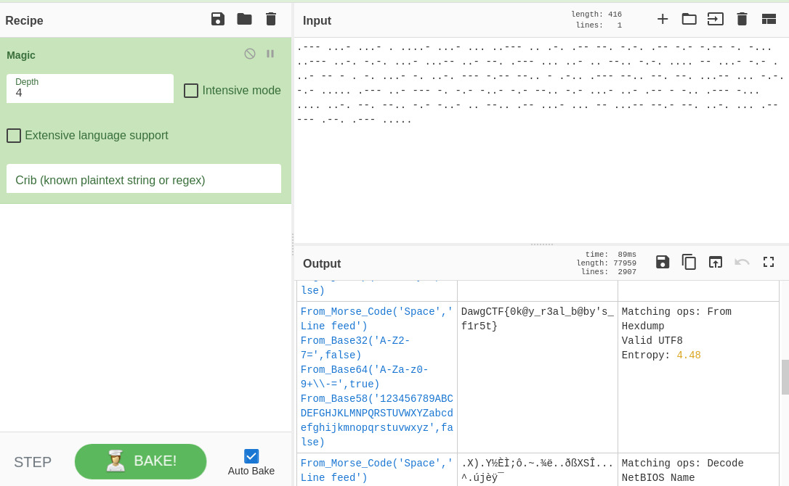

Cooking The Ramen
“The Magic operation attempts to detect various properties of the input data and suggests which operations could help to make more sense of it.” - CyberChef
Put the given morse code into CyberChef, choose Magic operation, depth 3 gave a string still encoded, set depth to 4, the flag shown up.
